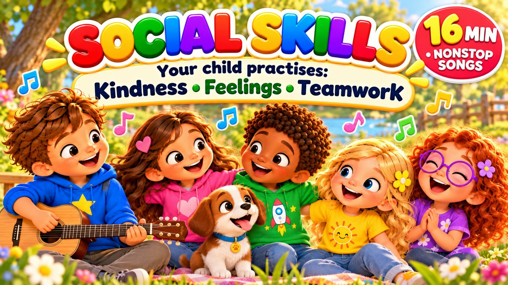

Social Skills Songs for Kids 🎵 Kindness, Feelings, Empathy, Teamwork & Listening | 16 Min
Continuous sing-along songs. Find each song’s free activities, colouring pages and quiz below.

▶Continuous sing-along songs. Find each song’s free activities, colouring pages and quiz below.

▶